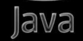

没有你就没有办法呼吸，没有你做什么也没有意义，只有你，才能让我去做，去想，去尝试
今天说到了你的朋友，其实我不是真正讨厌你的朋友，我只是担心你，就算只是一点点的伤害我也不想让你受到，
那个时候我太着急了，已经有人那样盯着你看了，你的朋友还要看她的男神，我一下就很生气，因为她和你没得
比，就我自己的想法，只要你没事，就算用这个世界陪葬我也在所不惜，我只希望我爱的你，我的宝宝开心平安
就好，虽然有些夸张有些偏激，但是真的差不多是这样的，上一次让你陪着弄指甲的也是，那么晚了，你回去的
路上要是遇到了什么，她拿她自己的命都陪不了，原谅我如此夸张，我会试着用更好，你更能接受的方式去保护
去做点什么的。
（PS：今天日记：）很久没有见到你了，真的是越来越想念你了，我又老是不在你身边，我自己内疚的同时，却又
是担心，因为我不在你身边，我一直都希望我是可以把你保护的好好的，因为你就是我的全部，真的很难想象没有你
的时候我会是什么样子的，因为你太单纯了，那么多惊险的事情，以前没有我，我不知道，也已经是过去的事，现
在有了我，我不希望有一点点的可能让你收到一点点惊吓，一点点伤害。我真的很啰嗦，你告诉我以前你一个人的
时候也过了，现在没有什么问题的，我老是不想你一个人在晚上走，因为我不想有一点点，一点点的可能，一点点
都不想要，我不能忍受我自己让你收到伤害，更别说一点点来自别人的恶意。

我问过我自己：累吗，我告诉我自己，累，真的累，但是真的不累，真的很开心，很幸福。
因为我不懂，因为我以前没有做过，因为我没有习惯，我总是能给自己找太多的借口了。
就比如说这个东西，我花了一个星期，做了3个不同的网页，结果，全部都不好，都是因为自己的懒惰，即使
我知道是给你做的，但是我还是给自己找了很多借口，做成现在这个样子我真的想哭， 太差了。
但是我要笑，我要笑才能逗你笑，这个网页你千万不要给我评价，不好你就当做弹了一个钓鱼网站，然后关掉
吧，好的话，你就留着吧，但是不要给我说。（给自己保留一个可能会是好，的结果）
星期三：
那天我在给你说，在觉得你睡着了后说，我觉得我很累了，又不知道给谁说，觉得太矫情，又不想让你担心
就在你睡着后偷偷在单元楼下给你说，忽然听到了声音，吓我一跳，，仔细一听是你的呼吸声，静静的听着
你的呼吸声，一下子觉得心情好好，很开心。
白天你要去拍照片，看着那么漂亮的你，我真的又开心，又担心，我觉得自己有点太差了，却拥有着那么漂
亮的你，我真的要加油了。你穿那些衣服真的都好好看，我都超级喜欢，但是透的衣服，我一瞬间就不想让
你拍了，不想别人看到，只有我才能看，我怕你拍的不尽兴，但我还是说 了，因为我就是这样想的，很强烈。
到最后了，我还是希望宝宝可以出去和闺蜜去玩，但是一定要早早回家，像个乖宝宝一样。因为我总是担心
你，所以一定不要回去的太晚，回去晚也要稳稳的坐车到家门口，还要一直给我打电话才可以，